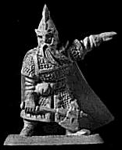
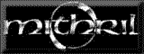

|  |
Welcome to our BeleriandMUSH Web Site! Nogrod is a realm in Beleriand. In a great mansion delved
in the Blue Mountains in the east, the Hollowbold is inhabited by grim
Dwarves, who name their home Tumunzahar. They are masters of
craftsmanship, who journey in the Elven lands of Beleriand to ply their
trade and bring home wealth to hoard in their deep caves. The purpose of
this site is to provide a quick and easy way for spreading the word about
this great culture, so please enjoy looking around!
If you are thinking of joining Beleriand to play an inhabitant of Middle-earth in the First Age, we would really like you to consider playing a Dwarf, as it is one of the least represented races on the MUSH. Yet, as we will endeavour to prove, by far one of the most fun to play! Any compliments, suggestions, or questions about this site? Please send email to Drór or contact him on the MUSH! |
|
Realm for history and thematic info about the Culture.
|
 All images on this site copyright Mithril Miniatures, used with permission.